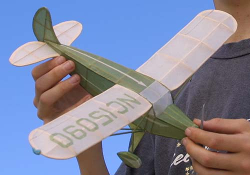

|
Here Marius Cannard shows off one of his creations. The model is a dime scale Fairchild 24, built from plans. The Fairchild weighs 14.5 grams, and flies on a 12" piece of 3/32 or 1/8 rubber. One suggestion to anyone building the "24" is to bring the motor peg mount foreward a little so you can fit the model on a stooge.
Marius is a prolific builder, and regularly has several other fine models with him. |
|  |
Copyright 2001, Thayer Syme. All rights reserved